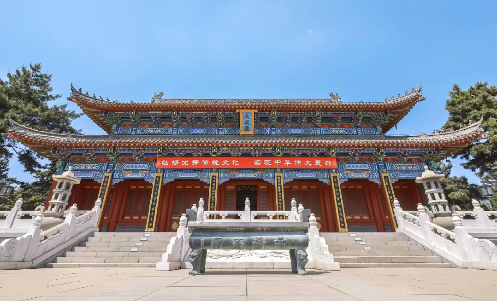

传奇：吉林文庙是中国东北地区建筑等级最高、保存最完整的清代文庙建筑群，与南京夫子庙、曲阜孔庙、北京孔庙并称"中国四大文庙"。始建于清乾隆元年（1736年），由乾隆皇帝御批兴建，是清政府在东北地区建立的第一座国立高等学府。现存建筑为清光绪三十三年（1907年）重建，占地16354平方米，建筑面积约3000平方米。2006年被列为全国重点文物保护单位，被誉为"关东第一文庙"。
核心看点：
游览攻略：
交通信息：吉林文庙位于吉林省吉林市昌邑区文庙胡同2号，松花江畔。公交3路、30路、40路、130路等可达"文庙"站。距吉林火车站3公里，车程10分钟；距龙嘉机场85公里，车程1.5小时。周边有吉林市博物馆、世纪广场、天主教堂等景点。建议与松花湖、北山公园、雾凇岛组合游览。
兴建背景：清雍正五年（1727年），清政府设永吉州，治所吉林乌拉（今吉林市）。为推行"尊孔崇儒"政策，教化边疆，乾隆元年（1736年），乾隆皇帝御批在吉林建文庙，设永吉州学。文庙由吉林将军常德主持修建，历时三年，于乾隆四年（1739年）建成。初建时规模较小，仅有大成殿、东西庑、棂星门等建筑，占地面积约5000平方米。
乾隆时期：文庙建成后，成为吉林最高学府永吉州学的所在地。乾隆七年（1742年），增设崇圣祠。乾隆二十二年（1757年），增设明伦堂、尊经阁。乾隆四十四年（1779年），乾隆皇帝东巡吉林，亲临文庙祭孔，赐御书匾额"与天地参"，文庙地位进一步提高。这一时期，吉林文庙培养了大批边疆人才，促进了儒学在东北的传播。
光绪重建：清光绪三十一年（1905年），日俄战争期间，俄军占领吉林，文庙遭严重破坏。光绪三十三年（1907年），吉林将军达桂奏请重建文庙，获光绪皇帝批准。重建工程由吉林分巡道顾肇熙主持，历时两年，于宣统元年（1909年）竣工。重建后的文庙规模扩大，建筑等级提高，大成殿由原面阔七间改为九间，用黄色琉璃瓦，形成今日格局。
民国时期：民国元年（1912年），文庙改为吉林省立第一师范学校附属小学。民国二十一年（1932年），伪满洲国时期，文庙改为"国立吉林师范学校"。这一时期，文庙建筑基本保存完好，但祭孔活动减少。1946年，国民党政府将文庙改为"吉林省立吉林中学"。
新中国成立后：1948年吉林解放，文庙由吉林市人民政府接管。1950年，改为吉林市第二中学。1966年"文革"期间，文庙遭受破坏，孔子像被毁，祭器、礼器散失。1984年，吉林市人民政府将文庙收回，成立吉林市文庙博物馆。1993年，对文庙进行全面维修，重塑孔子像，恢复祭孔活动。2006年，被列为全国重点文物保护单位。
重要人物：①常德：首任吉林将军，主持初建文庙；②乾隆皇帝：御批建文庙，东巡时亲临祭孔；③达桂：吉林将军，奏请重建文庙；④顾肇熙：吉林分巡道，主持重建工程；⑤成多禄：清末民初吉林名士，曾任吉林省教育厅长，为文庙题写匾额；⑥徐鼐霖：民国吉林省长，保护文庙，倡导儒学。
总体布局：吉林文庙采用中轴对称、前庙后学的传统文庙布局。南北中轴线长260米，自南向北依次为：万仞宫墙→泮池状元桥→棂星门→大成门→大成殿→崇圣殿。东西两侧有礼门、义路、名宦祠、乡贤祠、东西庑、明伦堂、尊经阁等。文庙坐北朝南，背依松花江，前临街道，体现了"负阴抱阳"的风水理念。
建筑等级：吉林文庙是东北地区建筑等级最高的文庙，体现了清代官式建筑的最高规格：①屋顶：大成殿为重檐庑殿顶，崇圣殿为单檐歇山顶，这是皇家建筑才能使用的屋顶形式；②开间：大成殿面阔九间，进深五间，符合"九五之尊"的帝王规制；③色彩：大成殿用黄色琉璃瓦，这是皇帝特许的规格，一般文庙只能用青瓦；④彩绘：采用和玺彩绘，这是清代最高等级的彩绘，用于皇家建筑和孔庙。
大成殿建筑：大成殿是文庙的核心建筑，建筑特点：①柱网：采用"满堂柱"布局，内外两圈柱子，外圈28根檐柱，内圈12根金柱，形成宽敞的内部空间；②斗拱：外檐用七踩单翘重昂斗拱，内檐用五踩重翘斗拱，既承重又装饰；③藻井：殿内顶部有蟠龙藻井，直径4米，中间雕有蟠龙，周围饰以祥云、莲花；④月台：殿前有汉白玉月台，东西宽25米，南北深18米，高1.2米，是祭孔时行礼的场所。
木结构技术：文庙建筑采用清代官式木结构技术：①柱：多为松木，柱径0.5-0.6米，有的柱高达9米；②梁：用抬梁式结构，大梁跨度达12米；③榫卯：全部采用榫卯连接，不用铁钉；④抗震：采用"侧脚"（柱子向内倾斜）、"升起"（檐柱从中间向两端逐渐升高）等技法，增强抗震性。建筑历经百年风雨和多次地震，仍基本完好。
装饰艺术：文庙装饰精美：①彩绘：外檐彩绘以青、绿、红、金为主色，绘有龙、凤、云、草等图案；内檐彩绘以青、绿、白为主，较为素雅。彩绘采用"一麻五灰"传统工艺，先做地仗（基层），再绘画；②雕刻：石雕有云龙御路、莲花望柱、石狮等；木雕有雀替、花板、格扇等；砖雕有墀头、影壁等；③瓦作：黄色琉璃瓦，有板瓦、筒瓦、勾头、滴水，勾头有"龙纹"，滴水有"凤纹"。
建筑材料：文庙建筑材料考究：①木材：主要用长白山红松，材质坚硬，耐腐蚀；②石料：用吉林本地花岗岩，用于柱础、台阶、栏杆；③砖瓦：青砖为当地烧制，琉璃瓦为河北唐山烧制；④颜料：彩绘用矿物颜料，如石青、石绿、朱砂、金粉，色彩持久不褪。
祭孔大典：吉林文庙每年举办春秋两次祭孔大典。春祭在农历二月初四（孔子诞辰），秋祭在农历八月二十七（孔子忌日）。祭典程序：①迎神：奏《昭平之章》，主祭官就位；②初献：献帛、献爵，奏《宣平之章》；③亚献：献羹、献食，奏《秩平之章》；④终献：献果、献茶，奏《叙平之章》；⑤读祝：读祭文；⑥送神：奏《德平之章》；⑦望燎：焚烧祭品。祭典有乐舞生64人，表演八佾舞。
儒学教育：文庙历史上是吉林最高学府。清乾隆年间设永吉州学，光绪年间设吉林府学。教学内容：①经学：《四书》《五经》；②史学：《史记》《汉书》等；③文学：诗赋、策论；④小学：文字、音韵、训诂。教学方法：①讲授：老师讲解经义；②自学：学生诵读、抄写；③会讲：师生讨论；④考课：每月考试。文庙培养了大批人才，如清末进士成多禄、徐鼐霖等。
科举文化：吉林文庙是清代吉林科举考试的中心。童试（考秀才）在文庙举行，乡试（考举人）在奉天（今沈阳）举行，会试、殿试在北京举行。清代吉林共出进士32人，举人285人，秀才数千人。文庙设有"科举文物陈列室"，展示科举文物：①试卷：清代吉林士子的乡试、会试卷；②匾额："进士及第""文魁"等匾额；③文具：笔墨纸砚、考篮、号板；④服饰：秀才、举人、进士的服装。
儒家礼仪：文庙传承儒家传统礼仪：①开笔礼：为学龄儿童举行的启蒙仪式，包括正衣冠、朱砂开智、击鼓明志、启蒙描红等；②成童礼：为14岁少年举行的成人仪式，包括告天、告祖、告父母、师长训诫等；③成人礼：为18岁青年举行的冠礼（男）笄礼（女）；④婚礼：按《朱子家礼》举行的传统婚礼。这些礼仪活动，传承了儒家文化。
文化传播：文庙是吉林文化传播中心：①讲学：定期举办儒学讲座，邀请学者讲解《论语》《孟子》等经典；②展览：举办"孔子圣迹展""儒家文化展""吉林文脉展"等；③出版：编辑出版《吉林文庙》《孔子与吉林》等书籍；④交流：与曲阜孔庙、北京孔庙、南京夫子庙等开展文化交流；⑤研学：开展中小学生研学活动，学习传统文化。
非物质文化遗产：吉林文庙传承多项非遗：①祭孔乐舞：清代宫廷祭祀音乐舞蹈，有乐曲六章，舞蹈八佾；②拓碑技艺：传承传统拓碑技术，拓印好太王碑、文庙碑刻等；③传统装裱：书画装裱修复技艺；④文庙雅乐：传承清代祭祀雅乐，有钟、磬、鼓、笙、箫等乐器。这些非遗项目，是中华优秀传统文化的重要组成部分。
历史价值：吉林文庙是清代在东北地区推行"尊孔崇儒"政策的历史见证。它记录了儒学在东北边疆的传播过程，反映了清政府对东北的文化治理策略。文庙的建筑变迁，见证了吉林从边疆军镇到文化名城的转变。作为吉林文脉的象征，文庙培养了大批人才，促进了东北文化教育事业的发展。
建筑价值：吉林文庙是中国现存最完整的清代官式文庙建筑群之一，具有极高的建筑价值：①规制完整：具有完整的文庙建筑序列，从万仞宫墙到崇圣殿，体现了传统文庙的规制；②等级最高：大成殿面阔九间，重檐庑殿顶，用黄色琉璃瓦，是东北地区建筑等级最高的文庙；③工艺精湛：木结构、彩绘、雕刻、瓦作等工艺，代表了清代官式建筑的最高水平；④保存完好：主体建筑基本保持光绪年间重建时的原貌，是研究清代建筑的珍贵实物。
文化价值：文庙是儒家文化在东北地区的重要载体。①祭祀功能：延续了近三百年的祭孔传统，传承了中华礼乐文明；②教育功能：曾是吉林最高学府，培养了无数人才；③文化传播：通过讲学、展览、出版等方式，传播儒家思想和中华优秀传统文化；④精神象征：是吉林的文化地标和精神家园，凝聚了城市文脉。
艺术价值：文庙建筑具有极高的艺术价值：①建筑艺术：中轴对称的布局，巍峨壮观的殿堂，体现了中国古代建筑的审美理想；②装饰艺术：精美的彩绘、雕刻，色彩典雅，图案丰富，具有很高的艺术水准；③园林艺术：泮池、古柏、碑刻，营造出庄严肃穆而又宁静雅致的氛围；④陈设艺术：孔子像、匾额、楹联、祭器，具有很高的艺术价值。
社会价值：文庙在当代社会具有多重价值：①教育价值：作为爱国主义教育基地和传统文化教育基地，对青少年进行传统文化教育；②旅游价值：是国家4A级旅游景区，年接待游客30万人次，促进了文化旅游发展；③研究价值：是研究清代建筑、儒学、科举、礼制的重要场所；④城市价值：是吉林市的文化名片，提升了城市文化品位。
保护与传承：吉林文庙得到有效保护和传承：①法律保护：2006年被列为全国重点文物保护单位；②规划保护：编制《吉林文庙保护规划》，划定保护范围和建设控制地带；③工程保护：实施古建筑维修、彩绘修复、防雷、消防等工程；④活态保护：恢复祭孔大典，举办传统文化活动，让文物"活"起来；⑤研究展示：成立吉林文庙博物馆，开展学术研究，出版研究成果；⑥公众参与：开展志愿者服务，提高公众保护意识。